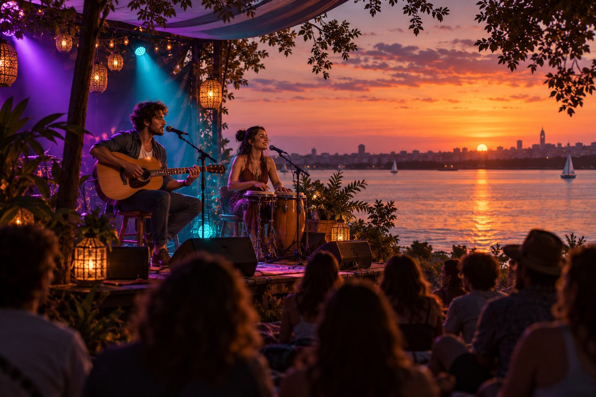
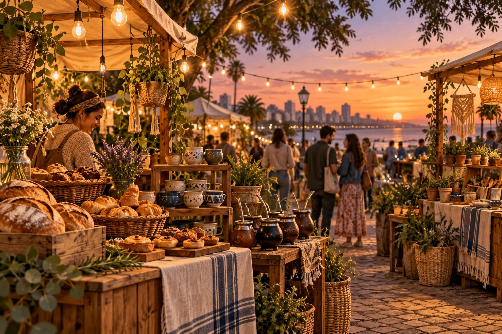
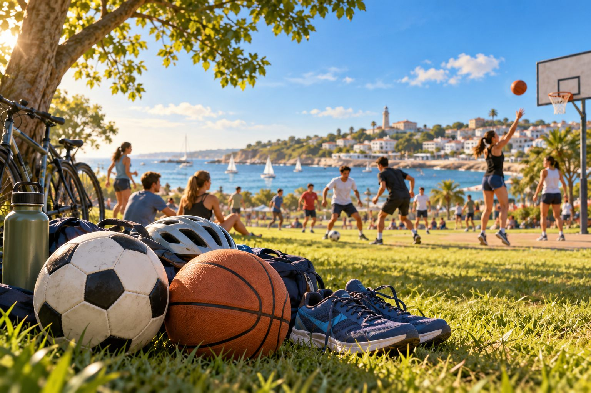
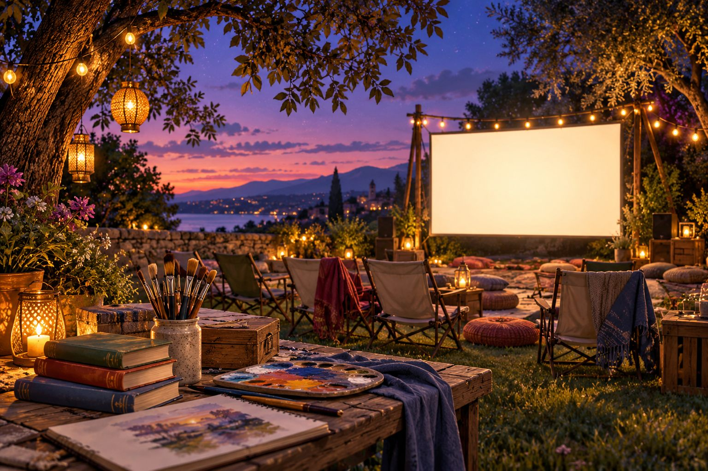
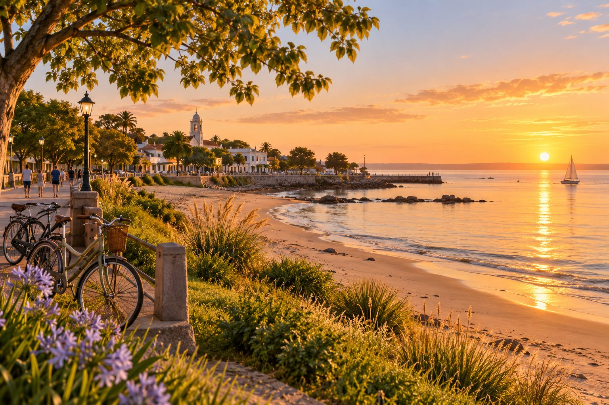

Música
Música al atardecer · Demo
2026-10-23 · 19:00 · Gratis
Sector sur de Juan Lacaze
Una tarde de canciones acústicas, percusión y encuentro junto al río. Propuesta familiar con espacio para llevar reposera y compartir un mate.
Vista previa: 8 eventos próximos y 2 finalizados; 4 perfiles ficticios, 12 comentarios y 4 valoraciones. Todos los datos son de demostración y las sedes son aproximadas. Esta página no modifica el hosting.

2026-10-23 · 19:00 · Gratis
Sector sur de Juan Lacaze
Una tarde de canciones acústicas, percusión y encuentro junto al río. Propuesta familiar con espacio para llevar reposera y compartir un mate.

2026-10-24 · 12:00 · Gratis
Centro de Juan Lacaze
Puestos de panificados, meriendas y cocina casera. La entrada es libre; las consumiciones se pagan en cada puesto. Una propuesta para recorrer en familia.

2026-10-25 · 10:00 · Gratis
Zona norte de Juan Lacaze
Jornada recreativa de fútbol con equipos mixtos y partidos cortos. Incluye pausas de hidratación y actividades para acompañantes. Traer ropa cómoda y botella de agua.

2026-10-30 · 20:00 · Gratis
Centro de Juan Lacaze
Encuentro de cine al aire libre con cortometrajes y una charla final. Podés llevar manta o reposera. La propuesta incluye un espacio accesible y una pausa entre funciones.
2026-10-31 · 15:00 · Gratis
Zona este de Juan Lacaze
Artesanías, cerámica, plantas y productos hechos a mano. Un recorrido para conocer propuestas locales y conversar con quienes las crean.

2026-11-01 · 09:00 · Gratis
Centro y zona sur de Juan Lacaze
Paseo tranquilo por calles de la ciudad, con paradas para observar el entorno y conversar. Recorrido corto y sin competencia. Llevar agua, gorro y calzado cómodo.
2026-11-07 · 14:00 · Gratis
Zona norte de Juan Lacaze
Taller inicial de programación, pequeños robots y prototipos. No hace falta experiencia previa. Habrá actividades en equipos y una muestra de ideas al cierre.
2026-11-08 · 16:00 · $ 100 UYU
Zona oeste de Juan Lacaze
Mesas abiertas de juegos cooperativos, estrategia y cartas. Explicamos las reglas antes de cada partida. El precio es ficticio y sirve para mostrar el filtro de eventos pagos.
2026-10-10 · 17:00 · Gratis
Sector sur de Juan Lacaze
Actividad de muestra ya finalizada: paseo fotográfico con celulares, búsqueda de colores y puesta en común de las imágenes. Incluye reseñas ficticias para demostrar esa función.
2026-10-17 · 18:00 · $ 150 UYU
Centro de Juan Lacaze
Actividad de muestra ya finalizada: encuentro de guitarra y percusión con micrófono abierto. El precio y las opiniones son ficticios y se usan únicamente en la presentación.